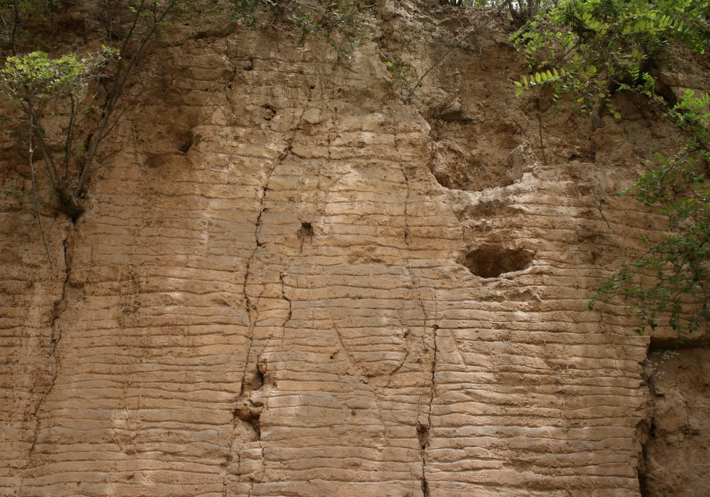
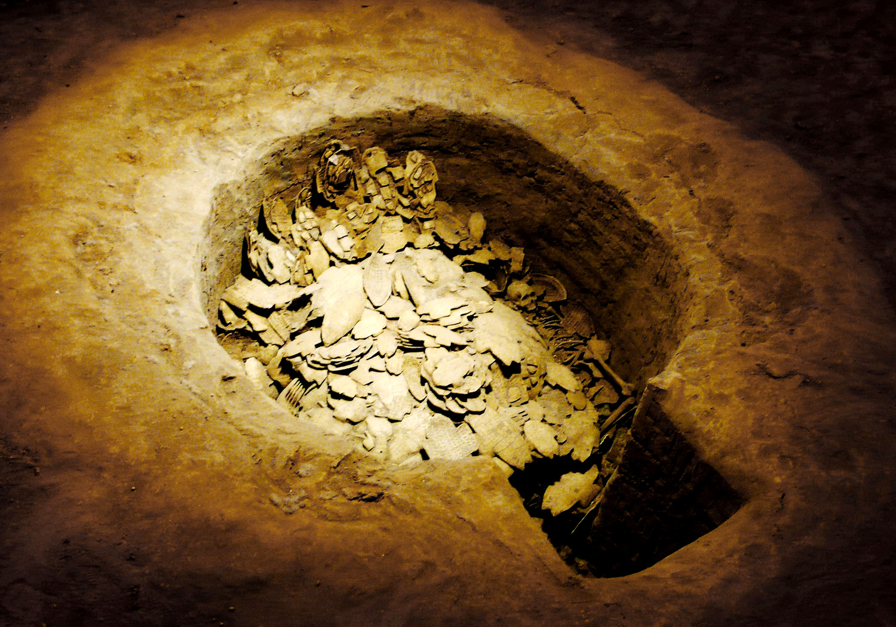
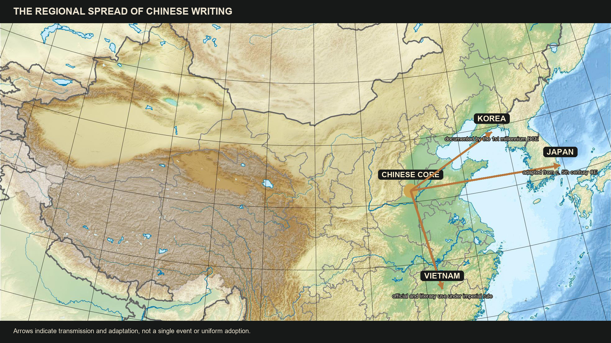

Power Over Bodies and Information
Where We're Going Today
Commanding People (Q4)
- Walls and tombs built by thousands
- Slaves, conscripts, and an unresolved debate
- Coercion backed by violence
Commanding Information (Q5–Q6)
- Royal records as administrative infrastructure
- Restricted literacy and political control
- A logographic script across dialects and centuries
Shang power reached outward by controlling labor and preserving information.
Part I
Walls, tombs, and armies built through coercion — Q4
Mobilizing Thousands
- Rammed earth walls, royal tombs, land clearance, warfare — all built on mass labor
- Rulers commanded thousands of workers for years at a time
- Meanwhile, farmers' tools were barely beyond Neolithic stone

Rammed earth: pounded loess, layer by layer, hard as concrete
Coercion as System
- Who were the workers? Scholars debate: slaves taken in war, or conscripts from serf-like farmers
- Either way, the labor was not voluntary — force sat behind every wall and tomb
- The gulf between rulers and ruled was enforced, not natural

The bronze yue axe — emblem of the power to command and to kill
⏸ Pause & Reflect
Walls, tombs, and armies all required thousands of workers who did not choose to be there.
Can a state built on coercion also be seen as legitimate by its people? What would the Shang king have said — and what would a laborer at Zhengzhou have said?
Part II
How records extended the king's reach — Q5
The King's Records
- Writing fully developed by 1200 BCE — invented earlier on perishable bamboo, wood, silk
- Scribes tracked enemies slain, booty taken, tribute received, animals bagged in hunts
- Dates kept by lunar months and ten-day and sixty-day cycles

An archive in bone — the Shang state's filing cabinet
Literacy: An Ally of Political Control
- Writing let commands and reports travel across an expanding realm
- Record-keeping made tribute, campaigns, and labor countable — and collectable
- Literacy stayed restricted to elites — controlling writing meant controlling information

Words cast in metal — records meant to last forever
⏸ Pause & Reflect
In Lecture 1, only the king could speak to Di. In this lecture, only the elite could read and write.
Is restricted literacy just another monopoly of access? State your answer to Q5 as a causal claim.
Part III
Why China retained a logographic writing system — Q6
How Chinese Characters Work
- Logographic: each character represents a word, not a sound
- Some began as pictures; others built for abstract ideas or borrowed for like-sounding words
- Most combine components — meaning element + sound element
- The cost: basic literacy takes 2,000–3,000 characters and years of study

From oracle bone pictures to modern characters — one continuous script
The Script That Held China Together
- Readers of mutually unintelligible dialects could share the same texts
- Characters stayed recognizable across centuries — educated readers reached texts from the deep past
- Korea, Japan, and Vietnam all began writing with Chinese script

The script travels: Korea, Japan, and Vietnam adopt Chinese characters
⏸ Pause & Reflect
Phonetic scripts are far easier to learn — and western Eurasia eventually abandoned its logographic systems.
Was keeping the character system worth its enormous cost in education? Who paid that cost, and who collected the benefits?
Coming Up: Lecture 3
The Shang could mobilize workers and scribes on a remarkable scale. Their most technically demanding industry, however, served the ancestors rather than the battlefield.
Writing, Bronze, and the Wider World — ritual vessels, Sanxingdui, and the technologies that crossed Eurasia.